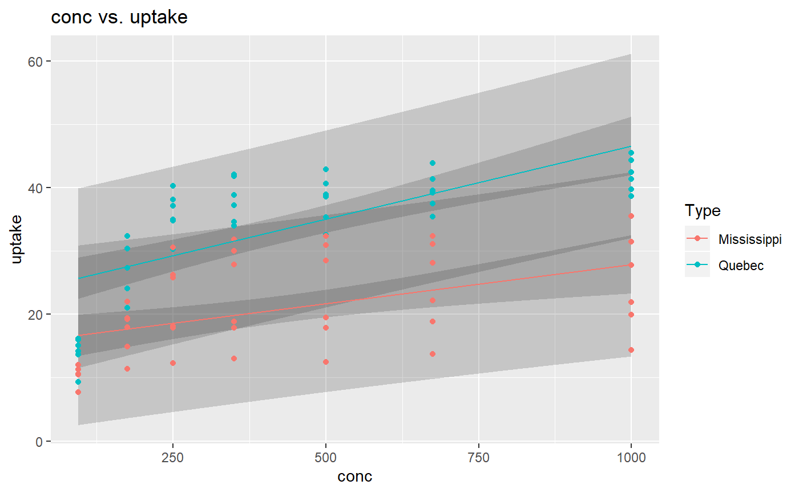

ggLinearModel
Jack Langston
2019-09-03
ggLinearModel.RmdggLinearModel
ggLinearModel is a package designed to create easy linear model visualizations in one simple step. Using the ggLinearModel function the user has access many various types of linear models, including models with:
- the same slope
- the same intercept
- polynomial predictors
- varying number of interaction effects
- both confidence and prediction intervals, with the ability to change the confidence level
- interactive features to show the equation for LSRL or information about a specific data point
- ggplot or plotly style graphs
Old vs. New
Although creating plots in R is super easy thanks to the creation of ggplot, adding multiple different items to a plot can be complex, and require lots of code. In this section, you will view the differences in code required to create different types of linear models and then visualize them.
The full model
This model is the easiest to code in ggplot, with the most important part is the geom_smooth(method = lm, ...). This ensures that the graph adds the least-squares regression lines for each category. Using ggLinearModel() we just input our dataset, or tibble, x variable, y variable, and categorical variable to create the same graph in much less code.
ggplot(data = iris, aes(x = Sepal.Length, y = Sepal.Width, col = Species)) +
geom_point() +
geom_smooth(method = lm, se = FALSE)ggLinearModel(iris, Sepal.Length, Sepal.Width, Species)Same slope model
Now let’s assume that you want to create a visualization that shows the regression estimates as lines with the same slope, or when there no interaction effect involved. In ggplot we have no easy way to do this. We must first create our model, and instead of using the geom_smooth(). Then we add a new geom_abline() for each level in the dataset, with each geom_abline() having different inputs for the intercept parameter. This is going to get messy quickly with lots of levels in your categorical variable. Using ggLinearModel(..., same_slope = TRUE) the user will get the same process done in much less code and prevents you from making any mistakes when creating the different geom_abline().
model <- lm(Sepal.Width ~ Sepal.Length + Species, data = iris)
m <- model$coefficients[2]
b <- model$coefficients[1]
ggplot() +
geom_point(data = iris, aes(x = Sepal.Length, y = Sepal.Width, col = Species)) +
geom_abline(aes(slope = m,
intercept = b,
color = 'setosa')) +
geom_abline(aes(slope = m,
intercept = b + model$coefficients[3],
color = 'versicolor')) +
geom_abline(aes(slope = m,
intercept = b + model$coefficients[4],
color = 'virginica'))ggLinearModel(iris, Sepal.Length, Sepal.Width, Species, same_slope = TRUE)Same intercept model
If a user wanted to create a model with the same intercept for each level of the categorical variable they would have to follow the same method as above, but instead, only include an interaction effect and not a categorical effect. Using ggLinearModel we can solve this problem but just adding the ggLinearModel(..., same_intercept = TRUE) parameter.
model <- lm(Sepal.Width ~ Sepal.Length + Sepal.Length:Species, data = iris)
b <- model$coefficients[1]
m <- model$coefficients[2]
ggplot(data = iris, aes(x = Sepal.Length, y = Sepal.Width, col = Species)) +
geom_point() +
geom_abline(aes(intercept = b,
slope = m,
color = 'setosa')) +
geom_abline(aes(slope = m + model$coefficients[3],
intercept = b,
color = 'versicolor')) +
geom_abline(aes(slope = m + model$coefficients[4],
intercept = b,
col = 'virginica'))ggLinearModel(iris, Sepal.Length, Sepal.Width, Species, same_intercept = TRUE)Polynomial model
Using ggLinearModel you can make models with any number of polynomial predictors. Just add the poly parameter to the function and assign it to the number of polynomial predictors you want in the model. This is a much easier solution than having to add a new stat_function to include each new curved line to the plot object.
mpg$year <- as.factor(as.character(mpg$year))
model <- lm(hwy ~ displ + I(displ^2) + displ:year + I(displ^2):year, data = mpg)
ggplot(data = mpg, aes(x = displ, y = hwy, col = year)) +
geom_point() +
stat_function(fun=function(x)
model$coefficients[1] + model$coefficients[2]*x +
model$coefficients[3]*x^2,
aes(col = '1999')) +
stat_function(fun=function(x)
model$coefficients[1] + model$coefficients[2]*x +
I(x^2)*model$coefficients[5]+model$coefficients[3]*x^2 + model$coefficients[4]*x,
aes(col = '2008'))ggLinearModel(mpg, displ, hwy, year, poly = 2)Polynomial model with fewer interactions
If it doesn’t make sense to include a model with as many interaction effects as polynomial predictors you can modify this in the ggLinearModel function. As a default when using the poly parameter in the ggLinearModel function the function automatically assigns the number of interaction effects to be equal to the number of polynomial predictors. You can change this by setting the interactions parameter to a different number than what you set poly at. Of course, the interactions parameter will not work unless you set the poly parameter, and the interactions parameter must be equal or less to the poly parameter.
model <- lm(hwy ~ displ + I(displ^2) + displ:year, data = mpg)
ggplot(data = mpg, aes(x = displ, y = hwy, col = year)) +
geom_point() +
stat_function(fun=function(x)
model$coefficients[1] + model$coefficients[2]*x +
model$coefficients[3]*x^2,
aes(col = '1999')) +
stat_function(fun=function(x)
model$coefficients[1] + model$coefficients[2]*x +
I(x^2)*model$coefficients[3] + model$coefficients[4]*x,
aes(col = '2008'))ggLinearModel(mpg, displ, hwy, year, poly = 2, interactions = 1)Added Features
ggLinearModel provides the user with multiple extra features to create a visual that tells more than just a plain plot.
Confidence Interval and Prediction Interval
If the user wanted to add interval ribbons to their plot it is as simple as changing a parameter. Setting ci or pi to TRUE will add a confidence interval, and setting level to a number between 0 and 1 will change the confidence level of the interval. As the default, the level is preset to .95. The user can add both the ci and pi to the same graph if the desires.
ggLinearModel(CO2, conc, uptake, Type, ci = TRUE)ggLinearModel(CO2, conc, uptake, Type, pi = TRUE)ggLinearModel(CO2, conc, uptake, Type, pi = TRUE, level = .5)ggLinearModel(CO2, conc, uptake, Type, ci = TRUE, pi = TRUE)
Label name changing
Although ggLinearModel() will return a ggplot object you can still add a title, x-axis label, y-axis label, and legend title within ggLinearModel().
ggLinearModel(mtcars, wt, mpg, cyl,
title = "The Affect of a car's weight on the MPG", xlabel = 'Weight (1,000 lbs)',
ylabel = 'Miles per Gallon', legendTitle = 'Number of Cylinders in engine')Models and their coefficients
ggLinearModel(..., coefficients = TRUE) will print the coefficients used to create the models and LSRL. However, if you want to get the whole model back use ggLinearModel(..., model = TRUE). The user can later use this model to do predictions, create other plots using the model, and anything else the user may need a model for.
ggLinearModel(iris, Sepal.Length, Sepal.Width, Species, coefficients = T)
#> (Intercept) Sepal.Length
#> -0.5694327 0.7985283
#> Speciesversicolor Speciesvirginica
#> 1.4415786 2.0157381
#> Sepal.Length:Speciesversicolor Sepal.Length:Speciesvirginica
#> -0.4788090 -0.5666378
ggLinearModel(iris, Sepal.Length, Sepal.Width, Species, model = T)
#> $model
#>
#> Call:
#> lm(formula = yvar ~ xvar * catvar, data = data)
#>
#> Coefficients:
#> (Intercept) Sepal.Length
#> -0.5694 0.7985
#> Speciesversicolor Speciesvirginica
#> 1.4416 2.0157
#> Sepal.Length:Speciesversicolor Sepal.Length:Speciesvirginica
#> -0.4788 -0.5666
#>
#>
#> $plot
No categorical variable?
No problem. ggLinearModel() works without giving a categorical variable and any parameters you want.
ggLinearModel(women, height, weight)Adding on later
ggLinearModel always will return a plot. So if the user builds a plot using ggLinearModel and then later decides to add on it they can! It can be treated like any other ggplot item. This feature doesn’t work if plotly = TRUE.
plot <- ggLinearModel(iris, Sepal.Length, Sepal.Width, Species, same_slope = TRUE)
plot + geom_smooth(data = iris, aes(x = Sepal.Length, y = Sepal.Width), method = 'lm', se = FALSE) +
ggtitle('Categorical LSRL compared to overall LSRL')
Interactive and plotly features
You can create plots that will give the user more information about a data point when the user hovers over. Hovering over a line in the interactive plots will give the equation for the line. You can access these features using this example code ggLinearModel(iris, Sepal.Length, Sepal.Width, Species, interactive = TRUE). If you prefer plotly style plots to the ggplots from above you can add the plotly parameter and set it to TRUE as such, ggLinearModel(..., plotly = TRUE) This will modify the ggplot object and turn it into a plotly object.